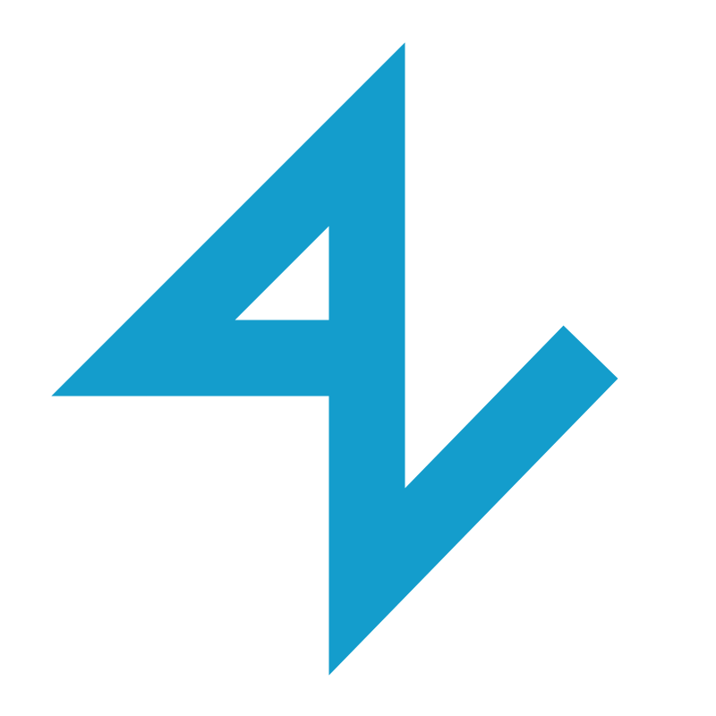

Skip to content

Vitalijs Arkulinskis
People · systems · progress
Back home →
404 · A wrong turn
That page isn’t here.
The link may have moved. Let’s get you back to something useful.
Go to the homepage →
See selected work